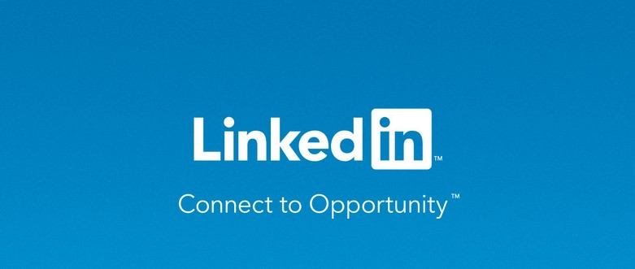
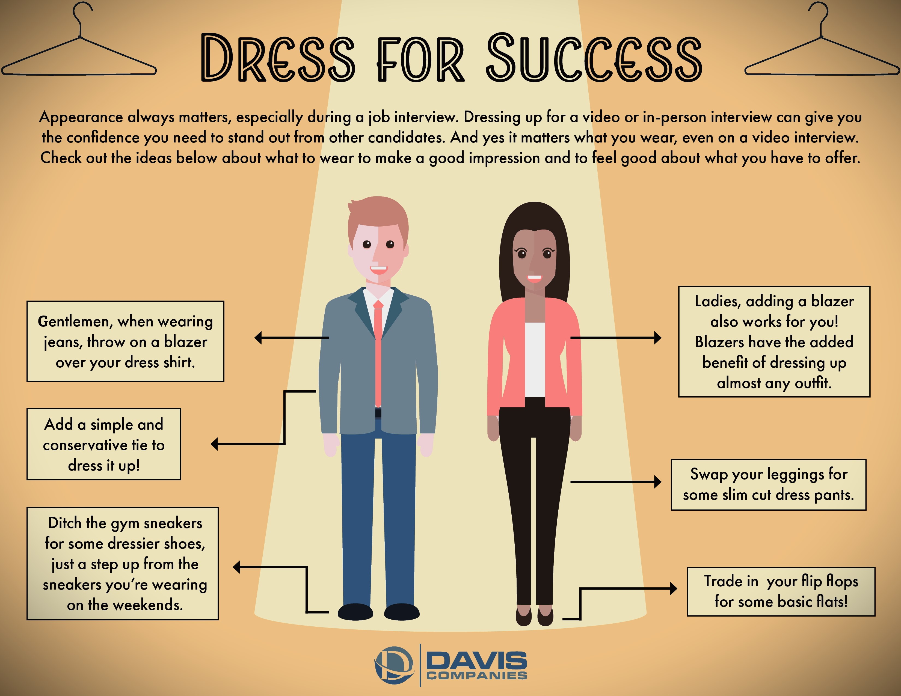

If there's ever a time to get serious about your professional growth, it's now. With the rising
costs of living...
read more

1.Gather information about industries that interest you. ...
2.Get notified of open positions quickly. ...
3.Showcase your skills. ...
4.Reconnect and develop new connections. ...
5.Help recruiters find you there.
Is a blazer too much for smart/casual, are open toes sandals too informal and can you
get away with shorts if it's sweltering outside?
read more
1. focus on performance....
2. Go for neutural tones....
3.Check your work dresscode...
4.dress according to ocassion..
5.remove facial and body piercing...

Interviews don't have to be so daunting. In this article, we'll share 7 powerful tips
that will land you that position!
read more
1.Research about company and bussiness
2.Re-read the job descripton carefully
3.Keep your answers ready for commonly asked questions
4.plan the question you want to ask to interviewer...
5.smile and make eyecontact throughout the interview
6.Reach 15-20 mintues early at the location...
7.dress formally...